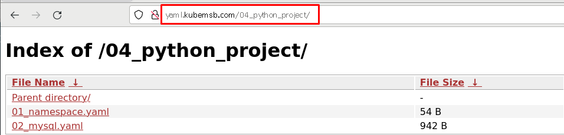
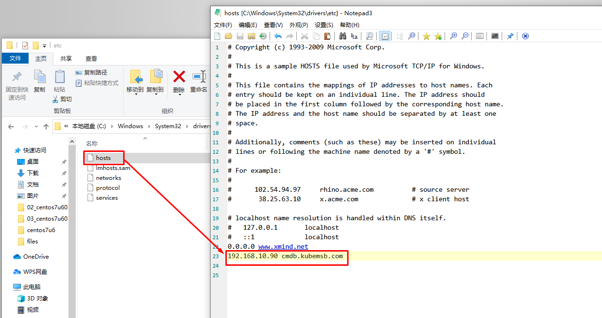
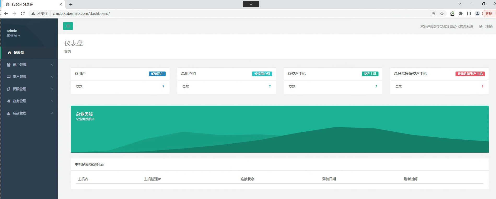

kubernetes集群Python项目上云部署¶
一、项目资源及项目代码¶
[root@localhost cmdb]# pwd
/root/cmdb
[root@localhost cmdb]# ls
db pipsource requirement syscmdb
db用于存储项目数据库
pipsource用于存储pip源
requirement用于存储python项目依赖资源
syscmdb用于存储项目源代码
[root@localhost cmdb]# ls db
cmdbdb.sql
[root@localhost cmdb]# ls -a pipsource
. .. .pip
可以直接复制到基础镜像中，便于安装python项目依赖
[root@localhost cmdb]# ls requirement
requirement.txt
[root@localhost cmdb]# cat requirement/requirement.txt
asn1crypto==0.24.0
astroid==2.1.0
autopep8==1.4.3
backcall==0.1.0
bcrypt==3.1.6
beautifulsoup4==4.7.1
certifi==2019.6.16
cffi==1.12.3
chardet==3.0.4
colorama==0.4.1
cryptography==2.4.2
decorator==4.4.0
Django==1.11.18
django-redis==4.10.0
Faker==2.0.2
geoip2==2.9.0
idna==2.8
ipython==7.6.0
ipython-genutils==0.2.0
isort==4.3.4
itchat==1.3.10
jedi==0.14.0
lazy-object-proxy==1.3.1
maxminddb==1.4.1
mccabe==0.6.1
paramiko==2.4.2
parso==0.5.0
pickleshare==0.7.5
pipenv==2018.11.26
prompt-toolkit==2.0.9
pyasn1==0.4.5
pycodestyle==2.5.0
pycparser==2.19
Pygments==2.4.2
pylint==2.2.2
pymongo==3.8.0
PyMySQL==0.9.3
PyNaCl==1.3.0
pypng==0.0.20
PyQRCode==1.2.1
python-dateutil==2.8.0
pytz==2019.1
redis==3.3.8
requests==2.22.0
six==1.12.0
soupsieve==1.9.1
text-unidecode==1.3
tornado==6.0.2
traitlets==4.3.2
urllib3==1.25.3
virtualenv==16.6.1
virtualenv-clone==0.5.3
wcwidth==0.1.7
webssh==1.4.5
wrapt==1.11.0
[root@localhost cmdb]# ls syscmdb
dashboard products resources syscmdb users
manage.py README.md static templates util
二、项目基础镜像准备¶
项目基础镜像主要是为项目提供运行环境，可以考虑直接下载，也可以考虑定制。本次采用定制。
可以在harbor主机上准备，准备完成后，再上传到harbor仓库，以备后续使用。
2.1编辑用于生成基础镜像Dockerfile¶
[root@harborserver ~]# mkdir pythonprojectbaseimage
[root@harborserver ~]# cd pythonprojectbaseimage/
[root@harborserver pythonprojectbaseimage]# ls
Dockerfile pipsource requirement
[root@harborserver pythonprojectbaseimage]# cat Dockerfile
FROM centos:centos7
MAINTAINER "admin<admin@kubemsb.com>"
WORKDIR /
ADD pipsource/.pip /root
ADD requirement/* /
RUN yum -y install python36 gcc gcc-c++ python3-devel
RUN pip3 install -r /requirement.txt
2.2 使用Dockerfile生成基础项目¶
[root@harborserver pythonprojectbaseimage]# docker build -t www.kubemsb.com/library/pythonprojectbaseimage:v1 .
Sending build context to Docker daemon 6.144kB
Step 1/7 : FROM centos:centos7
---> 470671670cac
Step 2/7 : MAINTAINER "admin<admin@kubemsb.com>"
---> Using cache
---> 9974940d0406
Step 3/7 : WORKDIR /
---> Using cache
---> b804fad33075
Step 4/7 : ADD pipsource/.pip /root
---> Using cache
---> 72d7ea2ef23b
Step 5/7 : ADD requirement/* /
---> Using cache
---> 42ebd8ffb203
Step 6/7 : RUN yum -y install python36 gcc gcc-c++ python3-devel
---> Running in 35254e1d7411
Step 7/7 : RUN pip3 install -r /requirement.txt
---> Running in 3f90c1c684a2
Successfully built cbf45af22bda
Successfully tagged www.kubemsb.com/library/pythonprojectbaseimage:v1
[root@harborserver pythonprojectbaseimage]# docker push www.kubemsb.com/library/pythonprojectbaseimage:v1
三、项目数据库部署¶
3.1 项目数据库文件准备¶
[root@localhost cmdb]# ls
db pipsource requirement syscmdb
db目录用于保存项目数据库
[root@localhost cmdb]# ls db
cmdbdb.sql
3.2 编辑数据库部署的资源清单文件¶
[root@nginxk8syaml html]# pwd
/usr/share/nginx/html
[root@nginxk8syaml html]# mkdir 04_python_project
[root@nginxk8syaml html]# cd 04_python_project
[root@nginxk8syaml 04_python_project]# ls
mysql.yaml namespace.yaml
[root@nginxk8syaml 04_python_project]# cat 01_namespace.yaml
apiVersion: v1
kind: Namespace
metadata:
name: cmdb
[root@nginxk8syaml pythonproject-yaml]# cat 02_mysql.yaml
apiVersion: v1
kind: Service
metadata:
name: cmdbmysql
namespace: cmdb
spec:
ports:
- port: 3306
name: mysql
clusterIP: None
selector:
app: mysqlcmdb
---
apiVersion: apps/v1
kind: StatefulSet
metadata:
name: cmdbdb
namespace: cmdb
spec:
selector:
matchLabels:
app: mysqlcmdb
serviceName: "cmdbmysql"
template:
metadata:
labels:
app: mysqlcmdb
spec:
containers:
- name: mysql
image: mysql:5.7
env:
- name: MYSQL_ROOT_PASSWORD
value: "123456"
- name: MYSQL_DATABASE
value: syscmdb
ports:
- containerPort: 3306
volumeMounts:
- mountPath: "/var/lib/mysql"
name: mysql-cmdb
volumeClaimTemplates:
- metadata:
name: mysql-cmdb
spec:
accessModes: ["ReadWriteMany"]
storageClassName: "nfs-client"
resources:
requests:
storage: 1Gi
3.3 应用数据库部署的资源清单文件¶

[root@master01 ~]# kubectl apply -f http://yaml.kubemsb.com/04_python_project/01_namespace.yaml
[root@master01 ~]# kubectl apply -f http://yaml.kubemsb.com/04_python_project/02_mysql.yaml
3.4 导入数据库¶
3.4.1 在k8smaster节点找到数据库文件¶
[root@master01 ~]# ls
syscmdb.sql
3.4.2 查找数据库访问地址¶
[root@master01 ~]# kubectl get pods -n cmdb
NAME READY STATUS RESTARTS AGE
cmdbdb-0 1/1 Running 0 3m45s
[root@master01 ~]# kubectl get svc -n cmdb
NAME TYPE CLUSTER-IP EXTERNAL-IP PORT(S) AGE
cmdbmysql ClusterIP None <none> 3306/TCP 3m54s
[root@master01 ~]# kubectl get ns
NAME STATUS AGE
cmdb Active 4m35s
使用命令进入查看
[root@master01 ~]# kubectl exec -it cmdbdb-0 sh -n cmdb
# mysql -uroot -p123456
mysql: [Warning] Using a password on the command line interface can be insecure.
Welcome to the MySQL monitor. Commands end with ; or \g.
Your MySQL connection id is 2
Server version: 5.7.29 MySQL Community Server (GPL)
Copyright (c) 2000, 2020, Oracle and/or its affiliates. All rights reserved.
Oracle is a registered trademark of Oracle Corporation and/or its
affiliates. Other names may be trademarks of their respective
owners.
Type 'help;' or '\h' for help. Type '\c' to clear the current input statement.
mysql> show databases;
+--------------------+
| Database |
+--------------------+
| information_schema |
| mysql |
| performance_schema |
| sys |
| syscmdb |
+--------------------+
5 rows in set (0.01 sec)
测试连通性
[root@master01 ~]# kubectl apply -f http://yaml.kubemsb.com/04_python_project/03_create_pod_busybox.yaml
[root@master01 ~]# kubectl get pods
NAME READY STATUS RESTARTS AGE
busybox-pod 1/1 Running 55 2d15h
[root@master01 ~]# kubectl exec -it busybox-pod sh
/ # nslookup cmdbdb-0.cmdbmysql.cmdb
Server: 10.96.0.10
Address 1: 10.96.0.10 kube-dns.kube-system.svc.cluster.local
Name: cmdbdb-0.cmdbmysql.cmdb
Address 1: 172.16.215.63 cmdbdb-0.cmdbmysql.cmdb.svc.cluster.local
[root@master01 ~]# kubectl exec -it busybox-pod sh
/ # ping cmdbdb-0.cmdbmysql.cmdb
PING cmdbdb-0.cmdbmysql.cmdb (172.16.215.63): 56 data bytes
64 bytes from 172.16.215.63: seq=0 ttl=62 time=0.448 ms
64 bytes from 172.16.215.63: seq=1 ttl=62 time=0.363 ms
64 bytes from 172.16.215.63: seq=2 ttl=62 time=0.543 ms
64 bytes from 172.16.215.63: seq=3 ttl=62 time=0.541 ms
--- cmdbdb-0.cmdbmysql.cmdb ping statistics ---
4 packets transmitted, 4 packets received, 0% packet loss
round-trip min/avg/max = 0.363/0.473/0.543 ms
nfs server 验证
[root@nfsserver ~]# ls /sdb/cmdb-mysql-cmdb-cmdbdb-0-pvc-5aa89483-fc27-428a-a556-0204a8e12e61/syscmdb/
db.opt
里面没有数据表
3.4.3 导入数据表¶
[root@master1 ~]# kubectl exec cmdbdb-0 -n cmdb -it -- mysql -uroot -p123456 syscmdb < cmdbdb.sql
[root@master1 ~]# kubectl exec -it cmdbdb-0 sh -n cmdb
# mysql -uroot -p123456
Type 'help;' or '\h' for help. Type '\c' to clear the current input statement.
mysql> use syscmdb;
Reading table information for completion of table and column names
You can turn off this feature to get a quicker startup with -A
Database changed
mysql> show tables;
+----------------------------+
| Tables_in_syscmdb |
+----------------------------+
| auth_group |
| auth_group_permissions |
| auth_permission |
| auth_user |
| auth_user_groups |
| auth_user_user_permissions |
| django_admin_log |
| django_content_type |
| django_migrations |
| django_session |
| products_product |
| resources_disk |
| resources_idc |
| resources_network |
| resources_server |
| resources_serverauto |
| resources_serveruser |
| users_profile |
+----------------------------+
18 rows in set (0.00 sec)
nfs server 验证
[root@nfsserver ~]# ls /sdb/cmdb-mysql-cmdb-cmdbdb-0-pvc-5aa89483-fc27-428a-a556-0204a8e12e61/syscmdb/
auth_group.frm django_admin_log.frm resources_idc.ibd
auth_group.ibd django_admin_log.ibd resources_network.frm
auth_group_permissions.frm django_content_type.frm resources_network.ibd
auth_group_permissions.ibd django_content_type.ibd resources_serverauto.frm
auth_permission.frm django_migrations.frm resources_serverauto.ibd
auth_permission.ibd django_migrations.ibd resources_server.frm
auth_user.frm django_session.frm resources_server.ibd
auth_user_groups.frm django_session.ibd resources_serveruser.frm
auth_user_groups.ibd products_product.frm resources_serveruser.ibd
auth_user.ibd products_product.ibd users_profile.frm
auth_user_user_permissions.frm resources_disk.frm users_profile.ibd
auth_user_user_permissions.ibd resources_disk.ibd
db.opt resources_idc.frm
里面已有数据表
四、项目镜像准备¶
4.1 目录及文件准备¶
创建制作镜像文件目录
[root@harborserver ~]# mkdir pythonprojectimage
[root@harborserver ~]# cd pythonprojectimage/
[root@harborserver pythonprojectimage]# ls
Dockerfile syscmdb
修改项目数据库连接文件
[root@harborserver pythonprojectimage]# vim syscmdb/syscmdb/settings.py
......
84 DATABASES = {
85 'default': {
86 'ENGINE': 'django.db.backends.mysql',
87 'NAME': 'syscmdb',
88 'USER': 'root',
89 'PASSWORD': '123456',
90 'HOST': 'cmdbdb-0.cmdbmysql.cmdb',
91 'PORT': '3306',
92 }
93 }
......
编辑制作项目镜像Dockerfile
[root@harborserver pythonprojectimage]# cat Dockerfile
FROM www.kubemsb.com/python-project/pythonprojectbaseimage:v1
MAINTAINER "admin<admin@kubemsb.com>"
ADD . /
WORKDIR /syscmdb
EXPOSE 8000
CMD ["python3","manage.py","runserver","0.0.0.0:8000"]
4.2 制定镜像¶
[root@harborserver pythonprojectimage]# docker build -t www.kubemsb.com/python-project/pythonprojectimage:v1 .
Sending build context to Docker daemon 26.5MB
Step 1/6 : FROM www.kubemsb.com/python-project/pythonprojectbaseimage:v1
---> cbf45af22bda
Step 2/6 : MAINTAINER "admin<admin@kubemsb.com>"
---> Running in 5c4842096cd4
Removing intermediate container 5c4842096cd4
---> ac510a15045d
Step 3/6 : ADD syscmdb /
---> 380a9d3815c2
Step 4/6 : WORKDIR /syscmdb
---> Running in 181e423d7b7c
Removing intermediate container 181e423d7b7c
---> 0c00978f568c
Step 5/6 : EXPOSE 8000
---> Running in fd34bab88e55
Removing intermediate container fd34bab88e55
---> c2f30e672d35
Step 6/6 : CMD ["python3","manage.py","runserver","*:8000"]
---> Running in 561d17f2dfba
Removing intermediate container 561d17f2dfba
---> b846c51ca3ba
Successfully built b846c51ca3ba
Successfully tagged www.kubemsb.com/python-project/pythonprojectimage:v1
4.3 上传镜像到harbor¶
[root@harborserver pythonprojectimage]# docker push www.kubemsb.com/python-project/pythonprojectimage:v1
五、项目部署¶
5.1 项目部署资源清单准备¶
[root@nginxk8syaml 04_python_project]# ls
deployment.yaml ingress.yaml mysql.yaml namespace.yaml service.yaml
5.1.1 deployment.yaml¶
[root@nginxk8syaml 04_python_project]# cat 04_deployment.yaml
apiVersion: apps/v1
kind: Deployment
metadata:
name: pythoncmdb
namespace: cmdb
spec:
replicas: 2
selector:
matchLabels:
project: pythoncmdb
app: cmdb-demo
template:
metadata:
labels:
project: pythoncmdb
app: cmdb-demo
spec:
imagePullSecrets:
- name: harborreg #认证信息
containers:
- name: cmdb
image: www.kubemsb.com/library/pythonprojectimage:v1 #镜像
imagePullPolicy: Always
ports:
- containerPort: 8000
name: web
protocol: TCP
resources:
requests:
cpu: 0.5
memory: 1Gi
limits:
cpu: 1
memory: 2Gi
livenessProbe:
httpGet:
path: /
port: 8000
initialDelaySeconds: 60
timeoutSeconds: 20
readinessProbe:
httpGet:
path: /
port: 8000
initialDelaySeconds: 60
timeoutSeconds: 20
5.1.2 service.yaml¶
[root@nginxk8syaml 04_python_project]# cat 05_service.yaml
apiVersion: v1
kind: Service
metadata:
name: pythoncmdbsvc
namespace: cmdb
spec:
selector:
project: pythoncmdb
app: cmdb-demo
ports:
- name: web
port: 80
targetPort: 8000
# 由于使用ingress暴露，所以不使用NodePort
5.1.3 ingress.yaml¶
[root@nginxk8syaml 04_python_project]# cat 06_ingress.yaml
apiVersion: networking.k8s.io/v1
kind: Ingress
metadata:
name: pythoncmdbingress
namespace: cmdb
annotations:
ingressclass.kubernetes.io/is-default-class: "true"
kubernetes.io/ingress.class: nginx
spec:
rules:
- host: cmdb.kubemsb.com
http:
paths:
- pathType: Prefix
path: /
backend:
service:
name: pythoncmdbsvc
port:
number: 80
5.2 应用项目部署资源清单¶

[root@master01 ~]# kubectl apply -f http://yaml.kubemsb.com/04_python_project/04_deployment.yaml
deployment.apps/pythoncmdb created
[root@master01 ~]# kubectl apply -f http://yaml.kubemsb.com/04_python_project/05_service.yaml
service/pythoncmdbsvc created
[root@master01 ~]# kubectl apply -f http://yaml.kubemsb.com/04_python_project/06_ingress.yaml
ingress.networking.k8s.io/pythoncmdbingress created
六、项目部署验证及访问¶
6.1 验证¶
[root@master01 ~]# kubectl get deployment.apps -n cmdb
NAME READY UP-TO-DATE AVAILABLE AGE
pythoncmdb 2/2 2 2 97s
[root@master01 ~]# kubectl get svc -n cmdb
NAME TYPE CLUSTER-IP EXTERNAL-IP PORT(S) AGE
cmdbmysql ClusterIP None <none> 3306/TCP 27m
pythoncmdbsvc ClusterIP 10.101.36.94 <none> 80/TCP 89s
[root@master01 ~]# kubectl get pods -n cmdb
NAME READY STATUS RESTARTS AGE
cmdbdb-0 1/1 Running 0 27m
pythoncmdb-56d4d84fd4-l927b 1/1 Running 0 116s
pythoncmdb-56d4d84fd4-xb6kk 1/1 Running 0 116s
[root@master01 ~]# kubectl get ingress -n cmdb
NAME CLASS HOSTS ADDRESS PORTS AGE
pythoncmdbingress <none> cmdb.kubemsb.com 192.168.10.13 80 87s
6.2 访问¶



